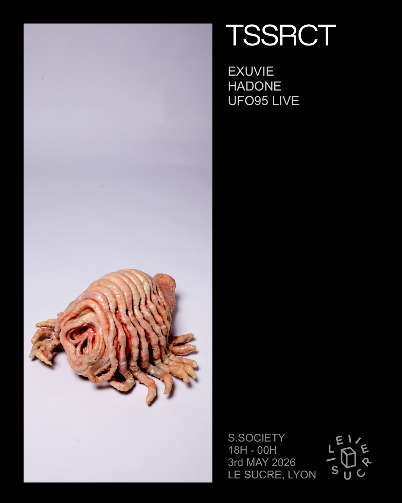

TSSRCT aims to expand its event and production branch beyond the traditional club format, exploring formats from club showcases to concerts and hybrid experiences in cultural institutions such as Bozar.
The goal is to build a dedicated community through alternative listening experiences — from ambient sessions to multidisciplinary events — engaging both core and new audiences.
Within one to two years, TSSRCT aims to scale toward large-format events inspired by Reaktor, Wall of Sound by DVS1, and Photon by Ben Klock — combining advanced sound systems, strong curation, and immersive scenography for a refined rave experience.
 Bozar
Bozar
 Public Records
Public Records
TSSRCT aims to expand beyond music into fashion, visual art, and design, building on the strong connection between electronic music and these fields. The goal is to position the project as a creative partner for both catalogue licensing and tailored compositions for designers, filmmakers, and artists.
This direction is already underway, supported by a network including Aaron Fowler, Samuel De Gunzburg, Romain Petrot, and Massine Benoukaci (Perrotin Dubai).
TSSRCT's catalogue is also connected to the sync ecosystem through Syncsmith, working with brands such as Louis Vuitton and Prada, opening opportunities for collaborations and cross-industry projects.
 Editorial
Editorial

Artwork